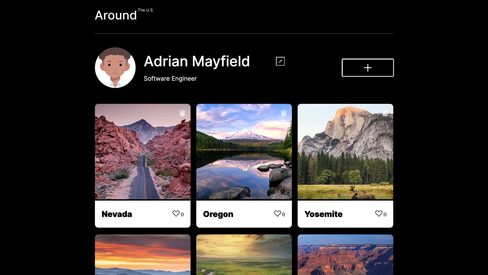
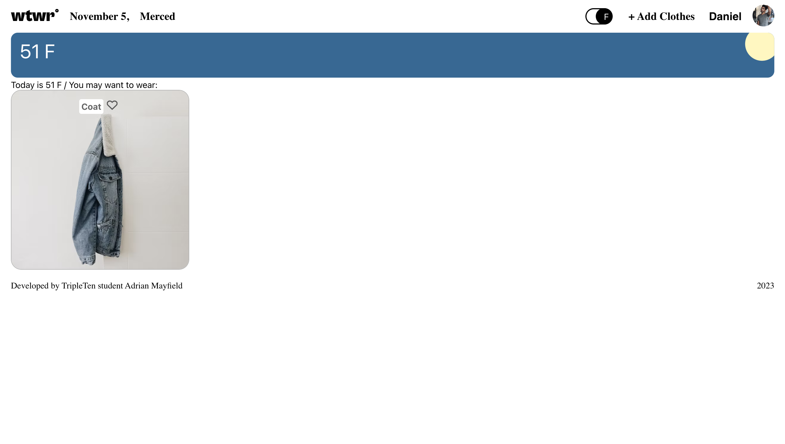

About Me
Hello, my name is Adrian! As a Full Stack Developer with a healthcare background, I bring a unique perspective to the tech world. A proud graduate of the Triple Ten Coding Bootcamp, I've honed and continue to refine my skills in the MERN stack (MongoDB, Express.js, React, Node.js), staying at the forefront of technology.
My journey from healthcare to technology is driven by a passion for lifelong learning and growth. I am committed to creating intuitive user experiences and relish opportunities to integrate my healthcare insights with modern technology.
Based in the California Central Valley, I'm actively seeking both in-person and or remote roles that challenge me and have the potential for positive impact. I thrive on projects that meld technical skill with deep empathy.
If you're in search of a developer who is eager to contribute to transformative projects, let's connect and explore the possibilities together!
Fun fact! I've been programing for 0 seconds!
Projects
Salt and Light Therapy

Salt and Light Therapy is a website that provides online therapy for individuals and couples. Our licensed therapists offer confidential support from the comfort of your own home. We understand that modern life can be challenging, and it can be difficult to find time to attend traditional therapy sessions. That's why we offer the convenience of online therapy, so you can receive the support you need at a time that works for you. Visit our website at Salt and Light Therapy to learn more and book your appointment.
Around The U.S

Around The U.S. is a web application that allows users to create a virtual scrapbook of their travels throughout the United States. With responsive design that ensures optimal viewing on any device, users can add and remove photos, like photos of other users, and make a few minor adjustments to their own profile.
WTWR (What to Wear)

WTWR (What to Wear?) is a weather-based clothing recommendation application. The goal of this project is to assist users by providing suitable clothing recommendations derived from the daily weather forecast.